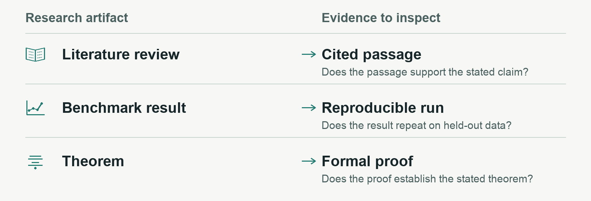

How to evaluate a scientific agent

Motivation
An agent can produce a polished research report while leaving its central claim unresolved. A citation might support what a previous paper reported. An experiment might establish that a piece of code runs. Neither alone establishes that a new finding holds. We wanted a way to tell which questions an agent had actually settled.
Prior work
Systems such as PaperQA2 ground literature answers in published sources. The AI Scientist goes further by proposing and running machine learning experiments and drafting papers. Comparing those systems by the number of tasks they automate misses an important difference. Checking a quotation and reproducing an experiment require different evidence.
What we delivered
We coauthored a survey that compares agents along three dimensions. We ask which research stages they handle, what they produce, and what can verify each claim. We use “closure failure” for cases where an output makes a question appear settled before the evidence warrants it. The peer-reviewed AI for Science Workshop at ICML 2026 accepted the survey as a poster.